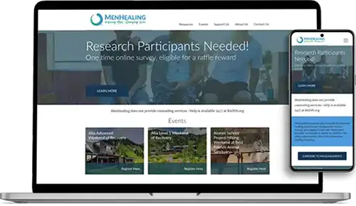

Hi, I'm Seth Callister
I'm a Psychology graduate turned UX Designer with a knack for connecting to how people think and feel. I love to create intuitive, mindful, and engaging designs.
My Projects
Eli Joe's Workshop
Eli Joe's Workshop specializes in custom fantasy crafts and table-top role-playing game aides. I designed a website that showcases their products and services.
Men Healing
MenHealing is a nonprofit org that provides resources to men who have been sexually victimized. I redesigned their website to be more user-friendly and accessible.
TMT Studios
TMT Studios is a small indie game development studio. I designed a website that showcases their games and provides a platform for community engagement.
My Background
I'm a creative individual who finds joy in the challenge of blending functionality with aesthetics. With a background in psychology, I'm fascinated by understanding how people think, feel, and behave, and I love incorporating this knowledge into user-centered designs. Each project is an exciting opportunity for me to learn and innovate, creating designs that resonate with users on a deeper level.
My Career So Far
I graduated from Utah Valley University in 2021 with a bachelors in Psychology, received a Certificate of UX/UI design from the University of Utah in 2022, and I'm now expected to receive a bachelors in Web Design and Development in August 2025. I've done a handful of service learning projects while in college and some freelance work as well.
Skills
UX Skills
UX Research | Usability Testing | Wireframing | Prototyping | Information Architecture
Technologies
Figma | Adobe Creative Suite | HTML | CSS | JavaScript | Node.js | Git | WordPress | WebFlow
Soft Skills
Communication | Collaboration | Problem-Solving | Time Management | Adaptability | Empathy